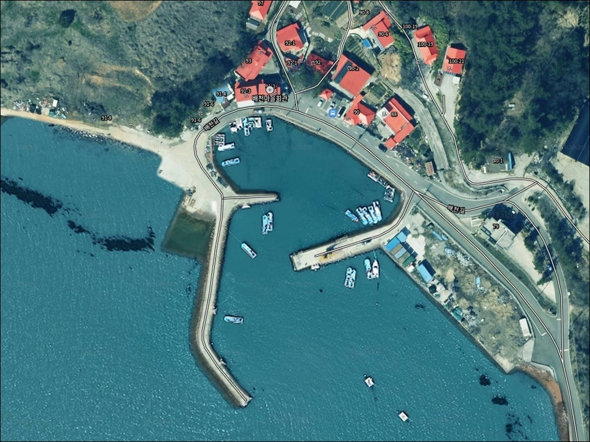
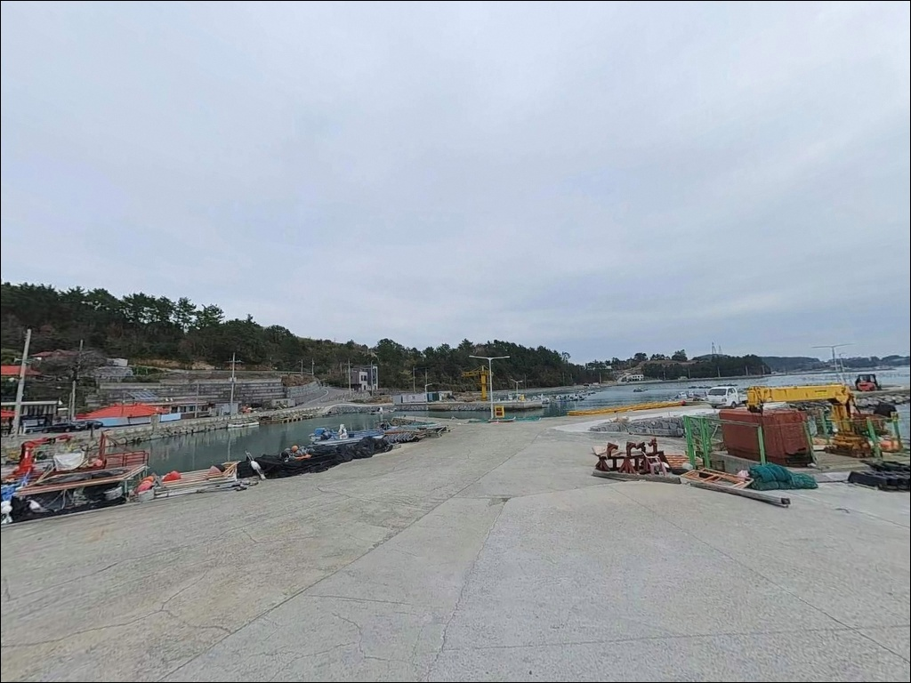
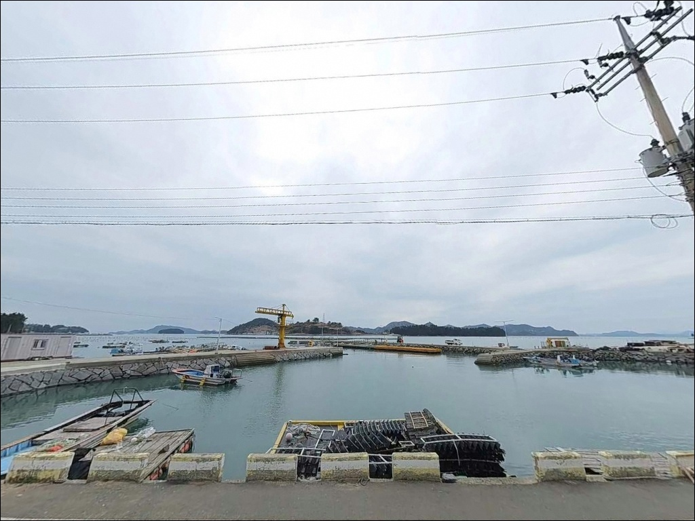
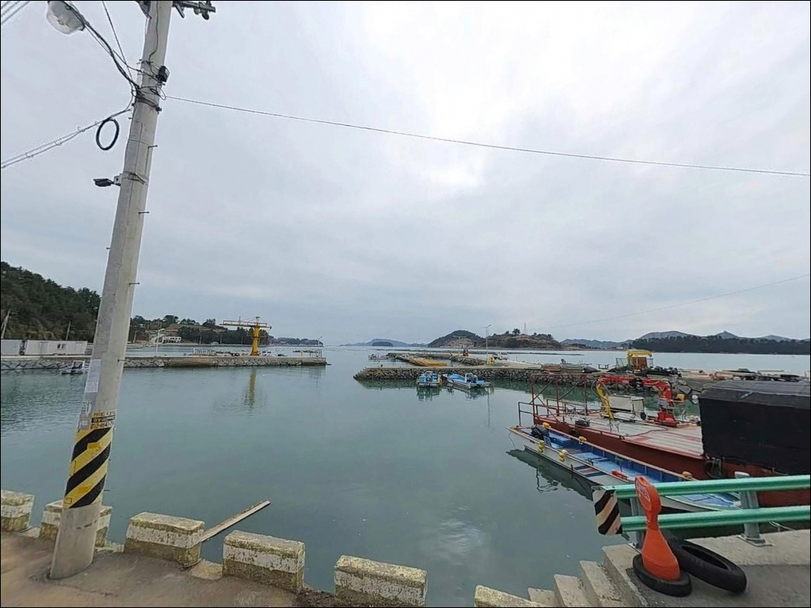
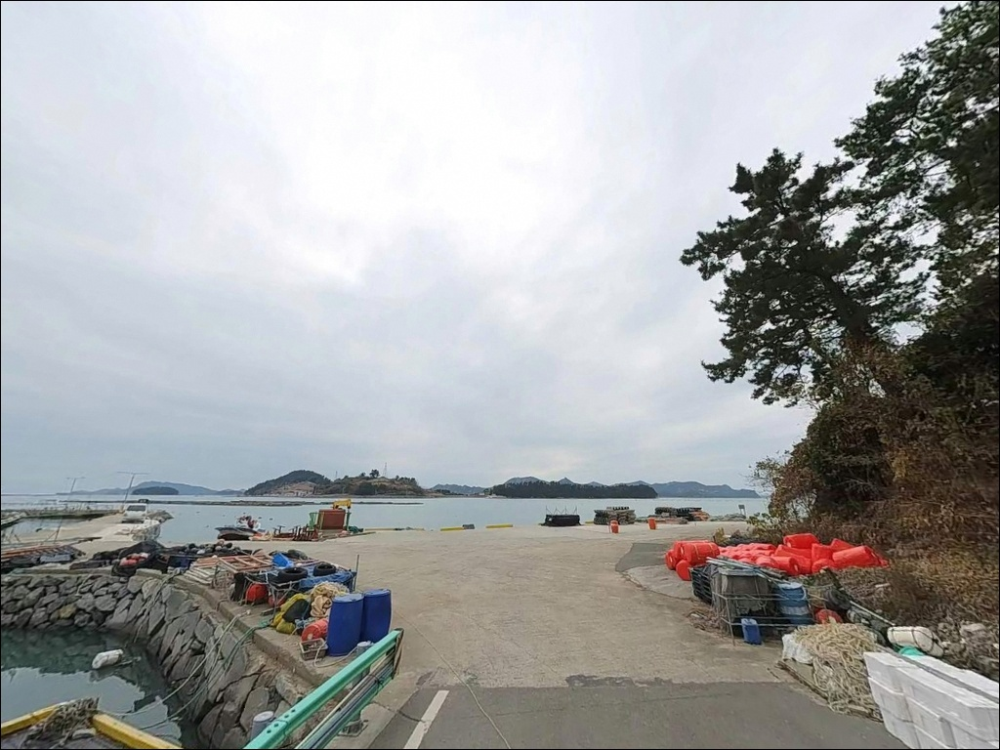
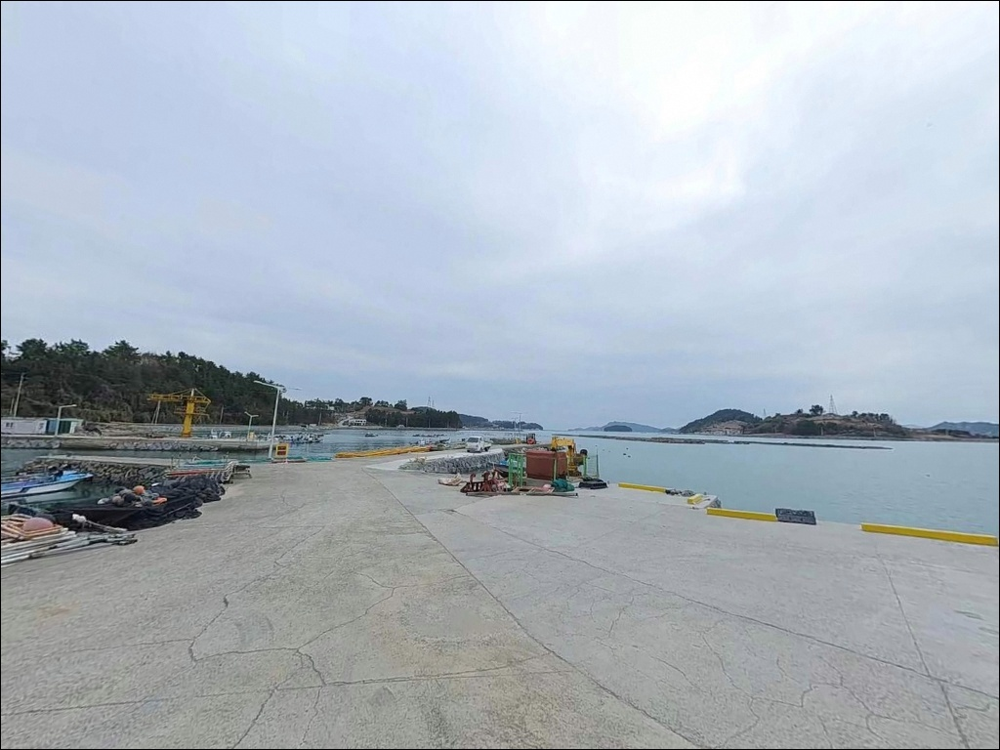
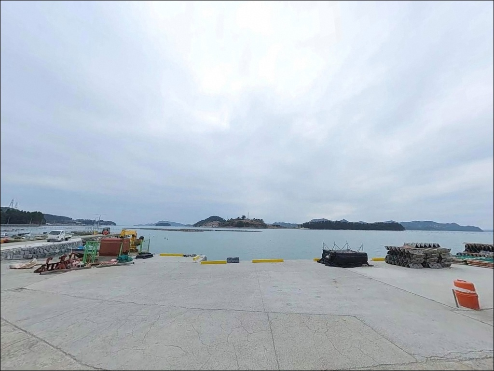
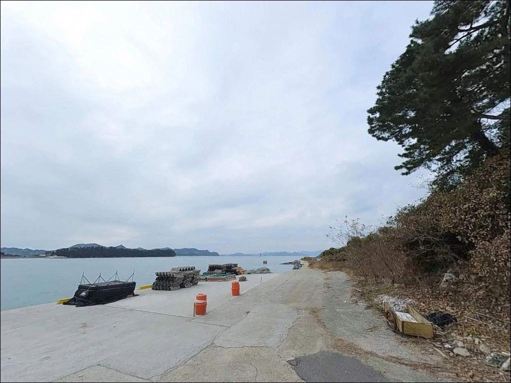
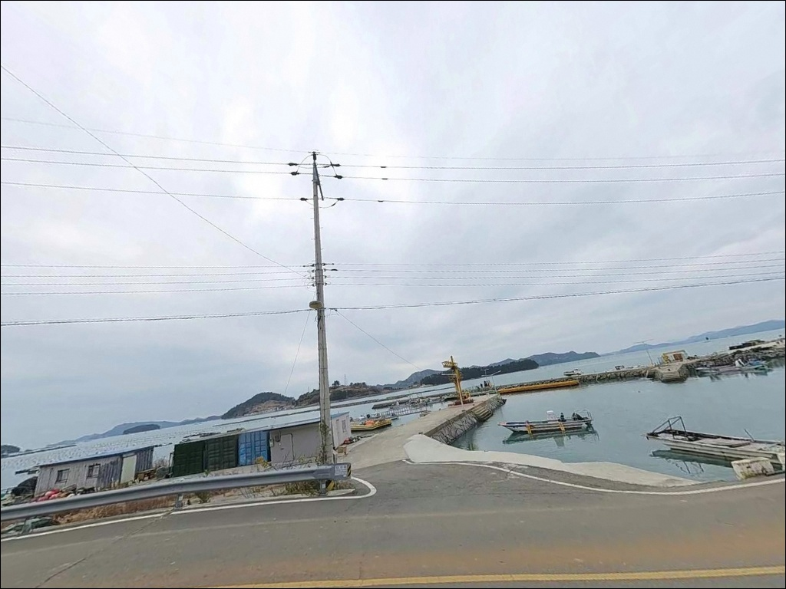

간조 때 오면 자리 없어지는 거금도 신촌리방파제 찌낚시, 만조 전후 2시간 수심


포인트 안내
신촌리방파제
전남 고흥군 금산면 신촌리 1377-2
간조 타이밍을 확인하지 않고 신촌리방파제를 찾으면
외항 포인트 수심이 낮아져
채비를 운용할 만한 자리가 남지 않습니다.
이 방파제는 만조 전후 2~3시간이
낚시의 실질적 가용 시간을 결정하는 구조입니다.
전남 고흥군 금산면 신촌리,
거금도 서쪽 해안 배천마을 입구에 위치한
신촌리방파제는 연홍도 방향 수역을 끼고 있는
소형 석축 방파제입니다.
거금도 본섬과 연홍도 사이 물길이
조류 흐름을 상시 유지시키는 구조로,
찌낚시·원투·에깅이 모두 가능한
혼합형 포인트입니다.
이 글은
신촌리방파제의 진입 환경, 차박 여건,
물때 기반 낚시 조건, 지형별 낚시 스타일에 집중합니다.
조황 단정이나 특정 어종 보장은
이 글의 범위에 포함되지 않습니다.

1. 진입 동선과 포인트 접근성
거금도는 거금대교 개통 이후
육지에서 차량으로 직접 진입이 가능합니다.
신촌리방파제까지는 거금대교 진입 후
거금일주도로를 따라 서쪽으로 진행한 뒤
신양마을 방향 해안도로로 내려가는 동선입니다.
주요 간선도로 구간은 왕복 2차선으로
정비되어 있습니다.
해안 마을 쪽으로 진입하는 마지막 구간은
1차선 폭의 농로 또는 마을 안길 수준입니다.
승용차와 소형 SUV는 무리 없이 진입할 수 있으며,
대형 차량이라면 출발 전에
위성지도로 진입로 폭을 한 번 확인하는 것이
현실적인 준비입니다.
방파제 진입부에는 콘크리트 공터가 있어
차량 회차와 일렬 주차가 가능합니다.
차량 2~3대 규모의 주차 공간이며,
어선 이동 동선과 겹치지 않는 위치를
먼저 확인하고 주차하는 것이 기본 매너입니다.

2. 차박 환경과 야간 체류 여건
신촌리방파제는 소형 방파제로
주차 공간이 제한적이라,
차박보다는 낚시 후 단기 체류 형태가
현실적으로 맞는 구조입니다.
공터에 차량을 세우고 낚시를 마친 뒤
하룻밤 머무는 방식은 가능하지만,
어선 조업 시간을 고려해
자리 선택에 여유를 두는 편이 좋습니다.
인근에 거금해양낚시공원 시설이 있어
방파제 구역은 완전한 암흑 환경은 아닙니다.
다만 방파제 자체 조명은 제한적이어서
야간 낚시와 이동에는 개인 조명이 필수입니다.
마을과 가까운 편이라 조용한 어촌 분위기가 유지되며,
소음에 신경 쓰는 것이 기본입니다.
연홍도 방향으로 열린 수역이라
서풍과 북서풍이 강하게 부는 날에는
체감 풍속이 크게 올라갑니다.
야간 체류 전 기상청 해상예보를 반드시 확인하고,
바람 방향에 따라 차박 지속 여부를 판단하는 것이
이 포인트의 기본 대응 방식입니다.


3. 주변 편의시설 및 인프라 현황
금진항 입구 방향으로
낚시점이 있어 미끼와 밑밥을
현지에서 구입할 수 있습니다.
신촌리방파제에서 가장 가까운
실용적인 낚시 소품 보충 경로입니다.
금산면 소재지까지 차량으로 약 5분 거리이며,
면 소재지에는 하나로마트와 식당이 분포합니다.
방파제 반경 1km 이내에는
편의점이 존재하지 않으므로
식수와 식량은 출발 전 완비하는 것이
이 구역 방문의 기본 준비입니다.
응급 상황 발생 시에는
거금대교를 건너 녹동 방향으로 이동해야
의료 시설 이용이 가능합니다.
차량 20분 이상의 거리이므로
비상약품과 연료는 사전에 충분히
준비해 두는 편이 좋습니다.

4. 물때 기반 방문 전 준비사항
신촌리방파제 방문에서 가장 먼저 확인할 것은
물때입니다.
간조 시에는 외항 수심이 낮아져
채비 운용이 가능한 자리가
크게 줄어드는 구조입니다.
만조 전후 2~3시간이 실질 낚시 시간이며,
이 타이밍에 맞춰 현장 입장 시간을
역산해 두는 것이 기본입니다.
바다타임에서 금산면 신촌리 기준 물때를 확인하고
출발 시각을 맞추는 것이 현장 낭비를 막는 방법입니다.
거금도 서쪽 해안은 서풍·북서풍 기상에
파도 영향을 직접 받는 노출 구조이므로,
기상청 해상예보도
출발 당일 아침 반드시 재확인해야 합니다.
석축 방파제 특성상 채비 손실이 생길 수 있으니
여분 채비를 넉넉히 챙기는 편이 좋습니다.
방파제 끝단과 외항 측면은 미끄러운 구간이 있으므로
낚시 전용 신발과 구명조끼는
필수 장비로 준비합니다.

5. 지형 기반 낚시 여건 분석
신촌리방파제의 지형적 핵심은
거금도 본섬과 연홍도 사이 물길이
만들어내는 조류 흐름입니다.
외항 방향으로 열린 구조라
조류 소통이 상시 유지되며,
방파제 끝단(콧부리) 주변이
조류가 집중되는 핵심 포인트 구간입니다.
해저 지형은 뻘바닥 비율이 높고
수중여가 드문드문 분포하는 구조입니다.
만조 기준 외항 수심은 5m 이상 확보되며,
내항 쪽은 이보다 얕습니다.
바닥층 변화 구간이 형성되는 외항 측면과
끝단이 찌낚시와 원투 모두에서
실효성 있는 포인트 구간이 됩니다.
내항은 어선 정박 구역으로 활용되는 공간이라
낚시 가능 구간은 외항 방향이 주를 이룹니다.
어선 이동 동선과 채비가 겹치지 않도록
자리를 잡는 것이 기본이며,
사리 전후 강한 조류가 흐를 때는
봉돌 무게를 올려 채비를 안정시키는
방식이 현실적입니다.
최신 조황은 출조 전에 꼭 검색해 보시기 바랍니다.


6. 지형에 맞는 낚시 스타일과 외항 자리 선택 기준
찌낚시는 이 포인트에서 가장 잘 맞는 낚시 방식입니다.
콧부리 전면에서 조류 방향으로 채비를 흘리는
유동찌 또는 반유동 세팅이 이 지형과 맞고,
조류가 외항으로 빠질 때와
발 앞으로 밀려올 때 모두
입질 구간이 형성되는 편입니다.
감성돔과 뱅에돔이 이 방식의
주 대상 어종입니다.
원투낚시도 이 포인트 구조에 적합합니다.
뻘바닥 비율이 높은 지형에서
외항 방향으로 20~40m 거리를 노리면
바닥 어종을 기대해 볼 수 있습니다.
들물 시간대 유속이 살아있는 구간이
원투 조과에 유리하며,
야간에는 붕장어 낚시 효율이 높아집니다.
에깅과 루어는 방파제 끝단과 측면을 중심으로
운용이 가능합니다.
연홍도를 마주보는 이 해역은
두족류 접근이 이루어지는 수역으로,
봄부터 초가을에 걸쳐 갑오징어와
무늬오징어를 기대해 볼 수 있습니다.
야간 에깅이 낮보다 조과 측면에서 뚜렷한 편입니다.

7. 대안 포인트와 플랜 B 동선
신촌리방파제 조류가 너무 강하거나
주차 공간이 이미 찼을 경우
가장 먼저 이동할 곳은
금진항 방파제입니다.
같은 신촌리 해안선 안에 있는 거금도 대표 어항으로,
내항·외항 구조가 분명하고
수심 6~7m를 확보한 안정적인 포인트입니다.
항구 입구에 낚시점이 있어
현지 미끼 보충도 가능합니다.
신양마을 방파제도 현실적인 대안입니다.
신촌리방파제와 동일 해안선에서
차량으로 5~10분 거리에 있으며,
석축 방파제 직벽을 따라
찌낚시와 민장대 운용이 가능한
감성돔 포인트로 알려진 곳입니다.
차박 여건이 더 넓고 편의시설이 갖춰진 곳을
찾는다면 익금해수욕장이 선택지입니다.
거금도 남쪽에 위치하며
화장실과 급수대가 갖춰진 공식 캠핑 구역이 있어,
가족 단위나 장기 체류에
더 적합한 차박 환경입니다.

물때와 바람 방향을 알면
신촌리방파제의 외항이 열립니다
찌낚시나 원투를 즐기면서
조용한 어촌 분위기 안에서 하룻밤을
보내고 싶은 낚시인이라면
신촌리방파제는 나쁘지 않은 선택입니다.
외항 조류 흐름이 살아 있는 포인트에서
에깅까지 병행할 수 있어
혼합 공략을 즐기는 스타일에 잘 맞습니다.
다만 만조 타이밍을 놓치거나
서풍이 강한 날 준비 없이 찾으면
외항 수심이 낮아진 채로
강한 바람만 맞는 상황이 될 수 있습니다.
물때 확인, 기상 체크, 여분 채비 준비,
이 세 가지를 갖추고 간다면
거금도 해안선의 조용한 포인트를
제대로 활용할 수 있습니다.
방파제 낚시와 차박을 함께 즐기고 싶다면
만조 타이밍에 낚시를 마치고
바람 방향을 등진 자리에서 하룻밤 머무는 것,
이것이 신촌리방파제를 가장 잘 쓰는
방식입니다.